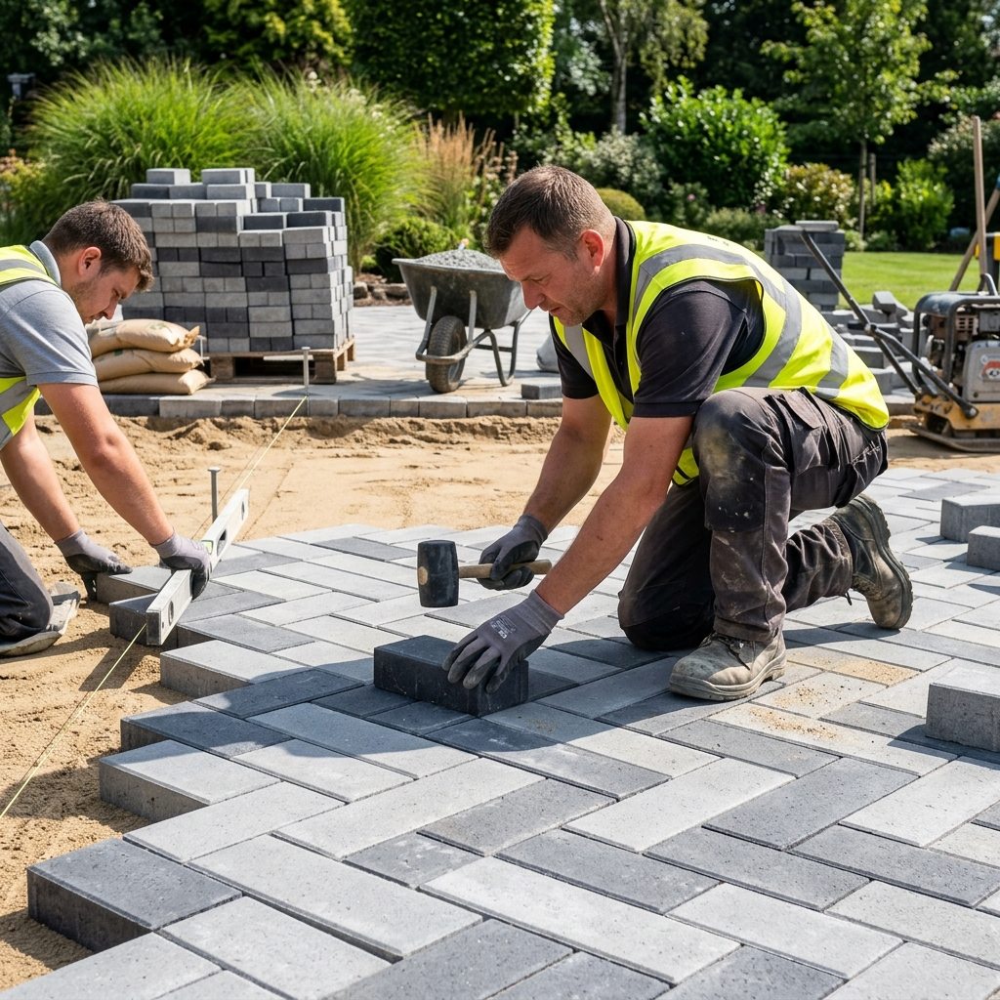
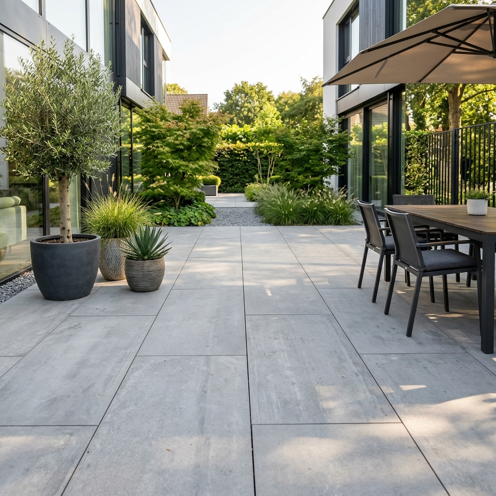

Szukasz sprawdzonego brukarza? ProfiBud to profesjonalne układanie kostki brukowej w Sanoku i promieniu 50 km. Zmieniamy zwykłe przestrzenie w reprezentacyjne, łatwe w utrzymaniu nawierzchnie na długie lata.
W firmie ProfiBud wiemy, że elegancki podjazd z kostki to nie tylko wygląd, ale przede wszystkim spokój na lata. Działając na terenie Sanoka i okolic (do 50 km), stawiamy na bezkompromisową jakość.
Jesteśmy rzetelną firmą. Kładziemy ogromny nacisk na solidną podbudowę i poprawne spadki, a oprócz układania kostki "ogarniamy" dla Ciebie wszystkie prace towarzyszące. Wchodzimy, działamy sprawnie i zostawiamy po sobie idealny porządek.
Zadowolonych klientów
Jakość materiałów
Tworzymy solidne i wytrzymałe wjazdy na posesje oraz podjazdy garażowe. Zapewniamy precyzję, aby nawierzchnia przetrwała lata intensywnego użytkowania.
Zamień swój ogród w strefę relaksu. Zajmujemy się profesjonalnym układaniem tarasów i placów wypoczynkowych z kostki oraz płyt tarasowych.
Wykonujemy estetyczne i praktyczne opaski z kostki (odbojówki) wokół budynków, dbając o czystość elewacji i idealne wykończenie wokół Twojego domu.


Planujesz ułożenie kostki wokół domu w Sanoku lub w promieniu do 50 km? Zadzwoń do nas – przyjedziemy, omówimy szczegóły i przygotujemy niezobowiązującą wycenę.
Zadzwoń i umów się na pomiary u Ciebie na działce.